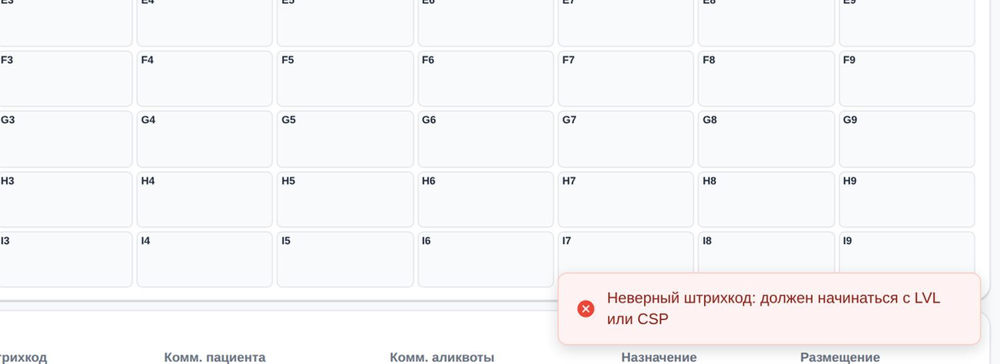
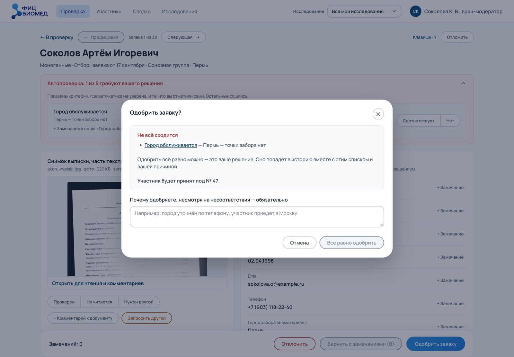

7. Движение и микровзаимодействия
В этой главе
Движение в интерфейсе объясняет, что изменилось и откуда это взялось. Микровзаимодействие отвечает на одно действие человека: нажал, навёл, перетащил, отправил. Хорошее движение незаметно. Плохое мешает работать или укачивает.
Зачем нужно движение
Движение оправдано, когда решает одну из задач:
| Задача | Пример | Почему движение помогает |
|---|---|---|
| Показать связь | Лист выезжает от кнопки, которая его открыла | Человек понимает, откуда взялся новый слой и куда он денется |
| Показать изменение состояния | Кнопка меняет вид при нажатии | Человек видит, что система приняла действие |
| Направить внимание | Новое уведомление появляется в углу | Глаз замечает движение раньше, чем статичный элемент |
| Показать ожидание | Индикатор загрузки в кнопке | Человек знает, что система работает, и не жмёт повторно |
| Сохранить ориентацию | Плавная прокрутка к полю с ошибкой | Человек видит, куда его перенесли, и не теряется в длинной форме |
Если движение не решает ни одной из этих задач, его убирают. Почему: каждое лишнее движение тратит внимание и время человека.
Состояния элемента
У каждого интерактивного элемента есть состояния. Их показывают всегда, даже если нет анимации.
| Состояние | Что показывает | Почему нужно |
|---|---|---|
| Обычное | Элемент можно использовать | Базовый вид |
| Наведение | Элемент кликабелен | На десктопе это главный способ понять, что можно нажать |
| Фокус | Элемент выбран с клавиатуры | Без него человек с клавиатурой не знает, где он |
| Нажатие | Действие принято | Подтверждает, что нажатие засчитано |
| Ожидание | Действие выполняется | Защищает от повторного нажатия |
| Неактивное | Действие сейчас недоступно | Объясняет, что нажимать бесполезно |
Длительность и плавность
Ориентиры, которые используют крупные системы (Material, Apple, Carbon):
| Что | Длительность | Почему |
|---|---|---|
| Наведение, нажатие | 100–150 мс | Ответ должен ощущаться мгновенным |
| Появление мелкого элемента | 150–250 мс | Глаз успевает заметить, работа не тормозит |
| Окно, лист, панель | 250–400 мс | Крупный объект движется дольше, иначе движение кажется рывком |
| Переход между экранами | 300–500 мс | Дольше уже воспринимается как ожидание |
Плавность (кривая ускорения):
- Появление: замедление в конце (ease-out). Почему: объект быстро входит и мягко останавливается, как настоящий.
- Исчезновение: ускорение в конце (ease-in). Почему: уходящее не держит внимание.
- Перемещение: ускорение и замедление (ease-in-out). Почему: так двигаются предметы в жизни.
- Линейная кривая только для бесконечных индикаторов. Почему: в остальных случаях она выглядит механически.
Обратная связь на действие
- Каждое действие получает ответ. Почему: без ответа человек повторяет действие, и система получает два запроса.
- Ответ стоит там, где человек смотрит. Почему: ответ в другом углу экрана могут не заметить.
- Форма ответа зависит от важности. Мелкое действие меняет элемент на месте, важное получает плашку, событие без участия человека приходит уведомлением. Почему: если всё подтверждать одинаково громко, важное тонет в мелочах.


Отмена вместо подтверждения
Для частых действий отмена удобнее окна подтверждения. Человек действует сразу, а в уведомлении несколько секунд есть кнопка «Отменить».


Скелеты и индикаторы загрузки
| Ожидание | Что показывать | Почему |
|---|---|---|
| До 1 секунды | Ничего или смену состояния кнопки | Индикатор мелькнёт и отвлечёт |
| 1–3 секунды | Индикатор в месте действия | Человек видит, что система работает |
| Загрузка экрана | Скелет: серые блоки в форме будущего содержимого | Человек заранее видит раскладку, и ожидание кажется короче |
| Дольше 10 секунд | Прогресс с объяснением | Без объяснения долгое ожидание выглядит как зависание |
Уважение к настройкам
- «Уменьшить движение» (
prefers-reduced-motion): крупные перемещения заменяют на появление без сдвига. Почему: у части людей движение вызывает головокружение и тошноту. - «Уменьшить прозрачность» (
prefers-reduced-transparency): размытие заменяют плотной поверхностью. Почему: текст на размытом фоне хуже читается. - Ничего не мигает чаще трёх раз в секунду. Почему: это может вызвать приступ у людей со светочувствительной эпилепсией.
Как проверять движение
Движение плохо проверяется по снимкам: снимок показывает один кадр, и хода по нему не видно. Автоматические проверки в скрытых вкладках браузера часто вообще не видят анимации.
Правила проверки:
- смотреть движение глазами в обычном окне;
- проверять на медленном устройстве или с замедлением в инструментах разработчика;
- проверять с включённым «Уменьшить движение».
Спецификация движения
Для разработки движение описывают так же точно, как цвет:
- что движется;
- откуда и куда;
- длительность в миллисекундах;
- кривая ускорения;
- что запускает движение;
- что происходит при «Уменьшить движение».
Почему: «плавно выезжает» каждый разработчик поймёт по-своему, а числа читаются одинаково.
Главное в главе
- Движение оправдано, когда показывает связь, изменение, ожидание или направляет внимание.
- Состояния элемента показывают всегда: наведение, фокус, нажатие, ожидание.
- Мелкое быстрее, крупное медленнее, появление с замедлением в конце.
- Для частых действий отмена удобнее окна подтверждения.
- Движение уважает «Уменьшить движение».
- Движение проверяют глазами в настоящей среде.
Вопросы для самопроверки
- Почему у кнопки должно быть состояние ожидания?
- Почему окно появляется дольше, чем подсветка при наведении?
- Когда отмена лучше окна подтверждения, а когда нет?
- Что делать с анимацией, если включено «Уменьшить движение»?
Упражнение
Выберите три действия в любом приложении: нажатие кнопки, открытие окна, удаление элемента. Для каждого запишите спецификацию движения: что движется, откуда и куда, длительность, кривая, вариант для «Уменьшить движение».